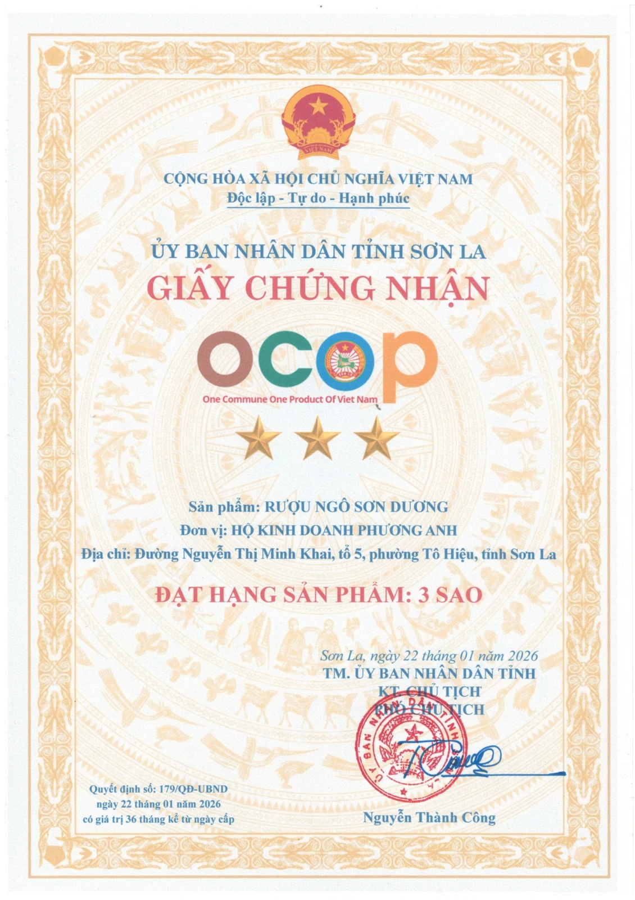

OCOP · SƠN LA
Rượu ngô Sơn Dương
đạt chứng nhận OCOP 3 sao.
Sản phẩm của Hộ kinh doanh Phương Anh được UBND tỉnh Sơn La chứng nhận đạt hạng 3 sao ngày 22/01/2026.
Quyết định số 179/QĐ-UBND · Chứng nhận có giá trị 36 tháng kể từ ngày cấp.
Xem giấy chứng nhận ↗